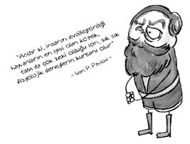
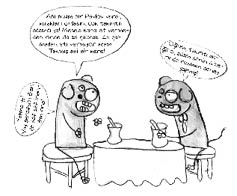
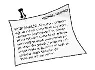

Ivan Petroviç Pavlov (1849-1936)
Rus fizyolog... Deneysel psikolog... Dünya psikolojisinin prensi olarak anılır.
Sadece beşi hayatta kalabilen on bir kardeşten en küçüğü olan Pavlov, yedi yaşındayken bir kaza sebebiyle kafasından önemli bir darbe almış ve on bir yaşına dek okula devam edememiştir. Babası onu evde eğitir. Önce rahip olmak isteyen Pavlov, Darwin’in yazılarını okuyunca rahiplikten vazgeçip bilimci olmaya karar verir ve Darwin’in insanı dinden imandan çıkarttığı sözünü kendince doğrular.
İki elini de ustalıkla kullanabilen Pavlov, her güzelin bir kusuru olur hesabı günlük işlere kayıtsızdır. O kadar ki maaşını almayı bile unutur, ona bunu karısı hatırlatır.
Hatta “Git şu maaşını al, zaten biz şurada kuru ekmeğe talim ederken tüm etleri o adi köpeğe yedirdin.” diye sabah akşam söylenmediyse de artık o, karısının güzelliğidir. Çünkü evliliklerinde bir süre ev tutmaya bile güçleri yetmediğinden, Pavlov laboratuardaki portatif bir yatakta uyurken, zavallı kadıncık bir akrabalarının yanında kalmıştır.
Rusya’daki iç savaşta oğullarından birini kaybeden Pavlov, neredeyse hayatının son anına dek bir bilim adamı olarak yaşamıştır. Ne zaman hastalansa kendisini incelerdi. Öldüğü gün bile kendini incelemiştir. Ölmeden önce söylediği son söz ise şu olmuştur: “Şimdi kalkma zamanı!”
1904 yılında fizyoloji ve tıp alanında Nobel ödülü almış olan Pavlov, yıllar sonra ünlü Türk şarkıcısı İlhan İrem’e de ilham kaynağı olmuş, şarkıcı, Pavlov’un klasik koşullanma deneylerinden esinlenerek “O Nobel almış belki ben de Altın Plak alırım.” diyerek “Şartlı Refleks” şarkısını piyasaya sürmüştür!

Ne demiş Pavlov…
• Ne kadar çok şey keşfedersek, o kadar çok bilinmeyen şey çıkar ortaya ve daha fazla soruyla karşılaşırız.
• Bilgiye giden yol sonsuzdur.
Neymiş klasik koşullanma yoluyla öğrenme…
Klasik koşullanma yoluyla öğrenme kuramı Ivan Pavlov’un yaptığı araştırmalara dayanır. Onun ortaya attığı “bağ kurma” yöntemiyle olaylar ve nesneler arasında bağlar kurulur. Pavlov, köpekler üzerinde yaptığı deneyde bu yolu izlemiştir.
Yaptığı deneyde, bir eliyle köpeğine et verirken öbür eliyle de bir zili çalar. Köpek başta bunu anlamaz, çünkü eti yemekten başka bir şeyle ilgilenmiyordur. Fakat bir iki derken köpek bakar ki ne zaman zil çalsa peşinden et de geliyor. Bunun üzerine biraz biraz olaya uyanmaya başlar.
Belli bir süre sonra Pavlov bakar ki köpeği Druzhok (telaffuz etmek de zorlananlar Çomar da diyebilirler) zil çalınca başlıyor salya salgılamaya. Neden? Çünkü zil çalınca et geldiğini anladı. Ete gösterdiği tepkiyi zile de gösteriyor. Yani etle zil arasında “bağ” kurdu.

Klasik koşullanma yoluyla öğrenmeye tavuklarda da sıkça rastlanır. Mesela gider yem verirsiniz, gider yem verirsiniz, gider yem verirsiniz... Belli bir süre sonra tavuk siz gelince yiyecek geldiğini öğrenir ve sizi görür görmez hemen size doğru koşar.
Ama bunu bazı insanlara anlatmak pek kolay olmayabilir. Nasıl mı? Şöyle:
– Selin, bak sana ne göstereceğim.
– Hayırdır Ali?
– Tavuklara öğrettim.
– Neyi?
– Tavuklar beni anneleri sanıyorlar!
– Niye babaları değil de anneleri? Hem sen nereden anladın seni anneleri sandıklarını? Emziriyor musun, nedir?
– Ben yanlarına gidince hemen yanıma geliyor, ayaklarıma dolanıyorlar.
– Hay Allah iyiliğini versin! Onlar sana değil, yeme geliyorlar. Klasik koşullanma... Liseden hatırlasana be oğlum, hani Pavlov falan...
– Olur mu canım, bunlar beni seviyorlar yahu! Ah kuzucuklarım benim... Hadi gelin de abla görsün... Bak, yem vermeden de geliyorlar, hanimiş annesinin kuzuları...
– Ali yapma etme, tavukların da psikolojisini bozacaksın!
BİTMEZ…
